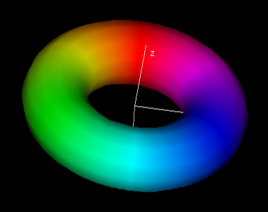

6.1: The First Fundamental FormExample 6.1.3: The xy-PlaneExample 6.1.4: CylinderExample 6.1.5: SpheresPage 168: Arc Length for General Curves on SurfacesExample 6.1.6: LoxodromesProposition 6.1.7: AreaExample 6.1.8Problem 6.1.5: Torus

6.2: Map ProjectionsSubsection 6.2.2: Azimuthal Map ProjectionsSubsection 6.2.3: Cylindrical Map Projections6.3: The Gauss MapDefinition 6.3.1: Gauss Map and Example 6.3.2: Gauss Map on a SphereExample 6.3.3: Elliptic ParaboloidExample 6.3.4: Hyperbolic ParaboloidPage 196: Differential of the Gauss Map6.4: The Second Fundamental FormDefinition 6.4.2: Second Fundamental FormExample 6.4.3: SpheresPage 201: Osculating ParaboloidExample 6.4.5: TorusExample 6.4.6: Monkey Saddle6.5: Normal and Principal CurvaturesDefinition 6.5.1: Normal CurvatureDefinition 6.5.5: Principal Curvatures and Principal Directionsp.216: Euler's Curvature Formula6.6: Gaussian and Mean CurvatureDefinition 6.6.1: Gaussian CurvatureDefinition 6.6.1: Mean CurvatureExample 6.6.4: Function GraphsProblem 6.5.12: Normal Variations (e.g., Parallel Surfaces)6.7: Ruled Surfaces and Minimal SurfacesProblem 6.7.11: Enneper's SurfaceProblem 6.7.14: Deformations of Minimal SurfacesProblem 6.7.17: Parallel Surfaces |